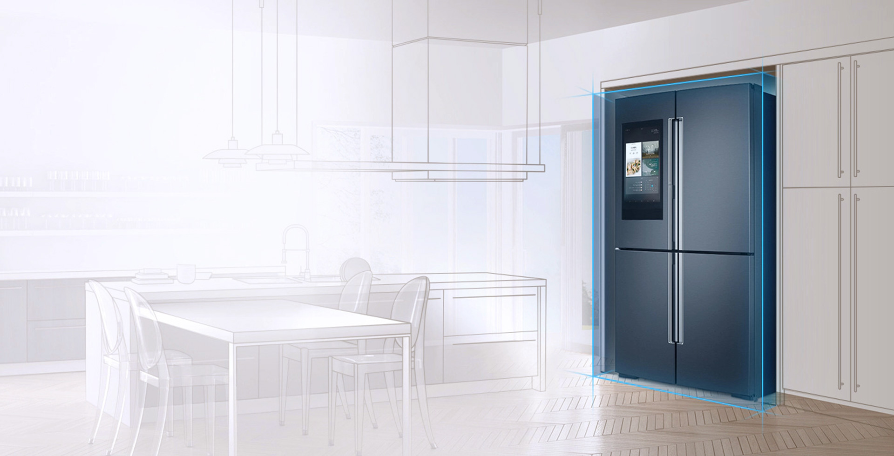
앙상블 냉장고
두 사람 이상의 연주자에 의한 합주 또는 합창을 뜻하는 ‘앙상블(Ensemble)’고급스러운 전면 스테인리스 소재에 주방 인테리어에 따라 선택할 수 있는 컬러 옵션까지 있어 당신이 생각한 주방 인테리어와 훌륭한 조화
앙상블 냉장고
- 디자인
- 특장점
- 갤러리
- 스팩
Design
두 사람 이상의 연주자에 의한 합주 또는 합창을 뜻하는 ‘앙상블(Ensemble)’
'앙상블 냉장고’는 상냉장과 하냉동이 조화롭게 구성된 냉장고 타입을 뜻합니다.
앙상블 냉장고는 고급스러운 전면 스테인리스 소재에 주방 인테리어에 따라 선택할 수 있는 컬러 옵션까지 있어 당신이 생각한 주방 인테리어와 훌륭한 조화를 이룹니다.
천연 소재의 포슬린 인테리어는 주방의 품격을 높여주며 공간별로 최적의 온도 제어 기능을 제공합니다.
- 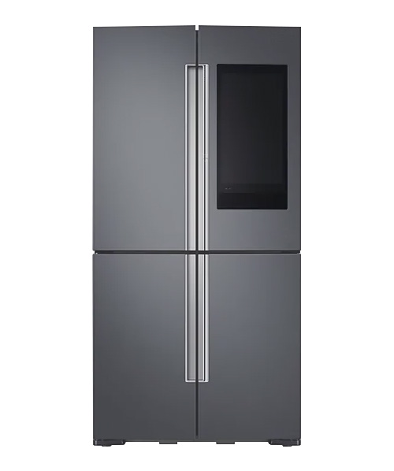
- 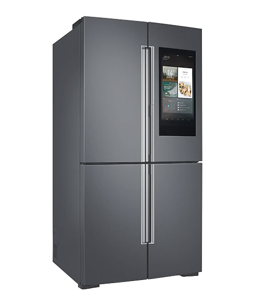
- 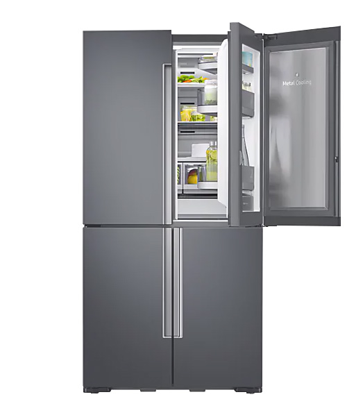
- 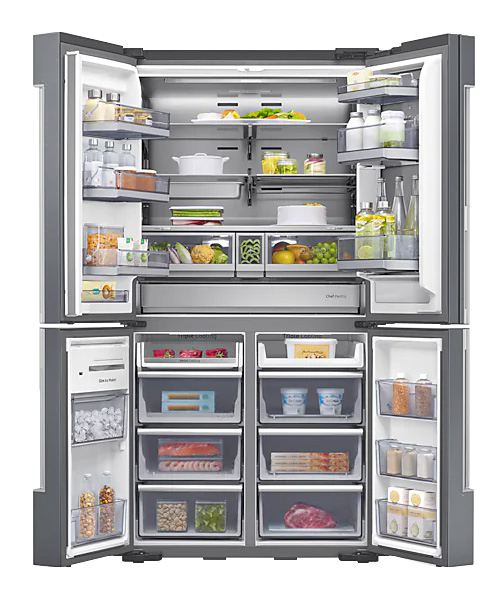
- 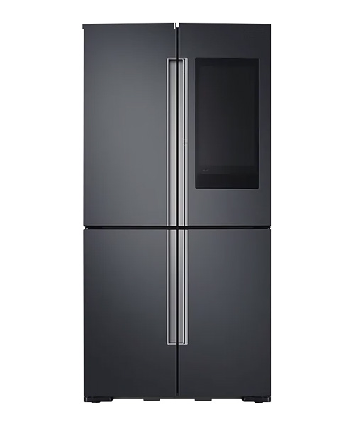
- 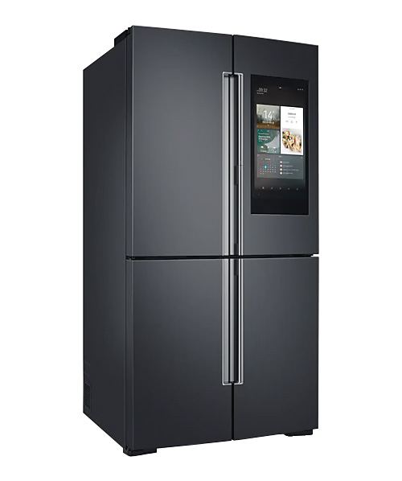
- 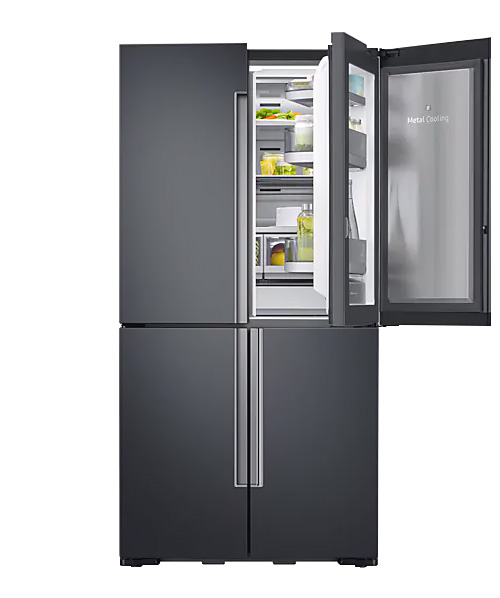
- 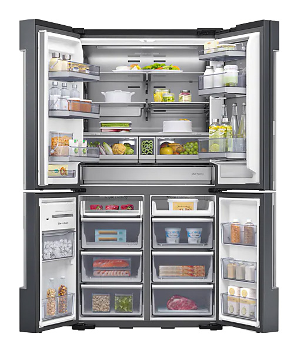

특장점
-
01
porcelain interior
불편의 소재, 포슬린 인테리어
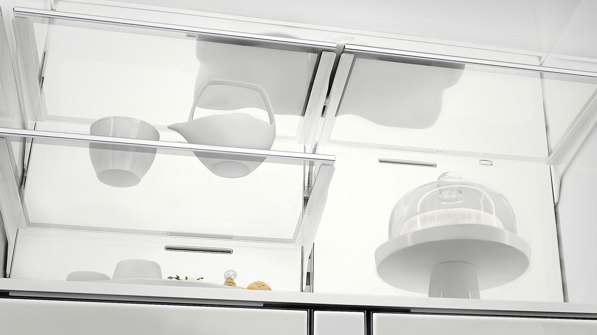
불순물을 거른 최상의 흙으로 만든 포슬린 인테리어는 천연소재로 만들어
단단하고 위생적이며 순백의 색과 질감을 자랑합니다.
땅속에서 보관한 듯한 신선하고 건강한 식재료로 요리를 빛내보세요.-
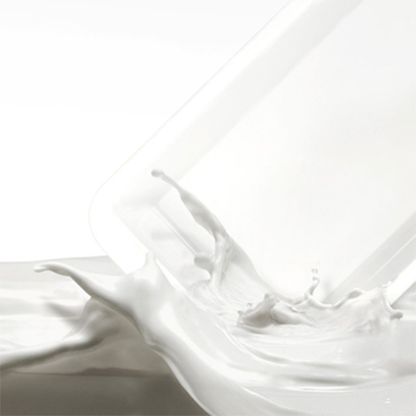
cleanness 순수한 깨끗함 다른 색으로 변하거나 물들지 않고 냄새도 남기지 않는 포슬린 인테리어의 깨끗함은 순수함에 가깝습니다. -
hardness 내면의 단단함 방탄용 아라미드 소재로 마무리 보강되어 탁월한 내구성으로 손상걱정 없이 오래오래 그 아름다움을 유지합니다. -
hygiene 천연의 건강함 천연 소재로 만들어진 포슬린 인테리어는 식재료를 더욱 위생적으로 보관할 수 있습니다.
-